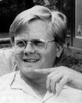

Résumé
of
SHELDON RAMPTON
509 Oak Street #4
Madison, WI 53704
(608) 244-8837
Fax: (608) 244-8839
Email: sheldon@execpc.com
Website: www.execpc.com/~sheldon
EDUCATION
- Princeton University B.A. Cum Laude in English, 1982.
- Studied writing under Joyce Carol Oates, E.L. Doctorow, and
John McPhee.
WRITING EXPERIENCE
Books
- Friends In Deed: the Story of US-Nicaragua
Sister Cities, a 184-page history of the US-Nicaragua
"citizen diplomacy" movement published in 1988. Friends
In Deed tells the story of of everday citizens in the United
States who opposed their government's policy of military intervention
in Central America by creating their own foreign policy at the
municipal level, acting constructively in cooperation with the
people of Nicaragua to help rebuild homes, schools and shattered
lives. In addition, the book includes a directory of over 180
organizations participating in "citizen diplomacy"
activities in Central America, along with how-to information
about fundraising, volunteer recruitment, media outreach and
public relations for small organizations.
- Toxic Sludge
Is Good For You! Lies, Damn Lies and the Public Relations Industry
is a critical and sometimes humorous expose of the PR industry.
Published in 1995, Toxic Sludge names names and reveals
how public relations wizards concoct and spin the news, organize
phony "grassroots" front groups, spy on citizens, and
conspire with lobbyists and politicians to thwart democracy.
The book has received glowing reviews from Publishers Weekly
and Choice. The Village Voice called it
"a font of knowledge on the anti-knowledge biz." The
San Francisco Bay Guardian called it "some of the
best investigative reporting around." According to Public
Relations Quarterly, "Toxic Sludge should
appear on the short list of anyone serious about the study of
public relations in the United States." Good Morning America
called it "a book that proves these flacks are hacks."
- Mad Cow USA:
Could the Nightmare Happen Here? England's epidemic
of mad cow disease has been called "the world's worst food
scare," and with good reason. In 1996, British beef markets
collapsed when the public learned that young people were dying
from a related disease called "new variant Creutzfeldt-Jakob
Disease" (nvCJD) which they contracted by eating infected
beef. Mad Cow USA shows how the disease emerged as a
result of factory farming practices which are still widespread
in the United States and which continue to pose a risk to animal
and human health, notwithstanding government and industry denials.
Jeremy Rifkin calls Mad Cow USA a "chilling revealing
book about what really goes on behind the scenes in the meat
industry." Library Journal calls it "gripping
... important ... highly recommended."
Periodicals
- Newspaper reporter for the Valley Times (daily:
circulation 4,500) in Las Vegas, Nevada. Covered business, local
features. Summer 1982.
- Newspaper reporter for the Daily Register in Portage,
Wisconsin. Covered county, police and farm beats. Received a
first place award for spot news coverage and third place for
photo essay in the Wisconsin Newspaper Association's Better Newspaper
Contest for 1983. April 1983-December 1984.
- Editor for the Sister State Update, a quarterly
newsletter published by the Wisconsin Coordinating Council on
Nicaragua. January 1984-Fall 1995.
- Contributing editor to the Bulletin of Municipal Foreign
Policy, a monthly national publication of the Center for
Innovative Diplomacy in Irvine, California. December 1988-June
1992.
- Paid contributor to Global Communities, a quarterly
newsletter published by the Institute for Policy Studies focusing
on citizen diplomacy and municipal foreign policy. June 1992-June
1994.
- Associate Editor, PR Watch, a quarterly newsletter
offering investigative journalism and critical analysis of the
public relations industry. April 1994-present.
- Editor, Nicaraguan Developments, a quarterly newsletter
for the Nicaraguan Community Development Loan Fund. May 1994-present.
- Author of numerous freelance articles for publications including
The Nation, Z Magazine, Covert Action Quarterly, and
In These Times.
Other Writing Experience
- Outreach Coordinator, Nicaraguan Community Development
Loan Fund (NCDLF). May 1994-present. The NCDLF
is a collaborative project between two nonprofit organizations:
the Nicaraguan Council of Churches and the Wisconsin Coordinating
Council on Nicaragua (WCCN). I have been involved with the
project since its inception in 1992, during which time the NCDLF
has recruited more than $5.5 million in loans from socially responsible
US investors to support job creation and economic development
in low-income Nicaraguan communities. My responsibilities have
included:
- Writing, editing, graphic design and typesetting of promotional
materials including news releases, public service announcements,
letters to the editor and opinion articles, flyers, brochures,
newsletters, a page prospectus for potential investors, grant
proposals and direct mail appeals.
- Organizing public events and activities, including tours
to Nicaragua.
- Development and maintenance of a database to track investors,
due dates for payment of interest and principal.
- Public presentations and news media interviews.
OTHER EXPERIENCE
- Graphic Artist (Desktop publishing), Quick
Quality Press. September 1987-August 1997
- Computer consultant (freelance). January
1995-present. Over the years, I have programmed and operated
IBM, Control Data, Burroughs and Macintosh mainframe, mini- and
microcomputers, using computer languages including BASIC, FORTRAN,
COBOL, THINK C, HTML and PERL. I have also spent more than my
fair share of time surfing the internet. I am experienced with
word processing, database, spreadsheet, telecommunications and
desktop publishing software including MS-DOS, WordPerfect, Lotus,
Microsoft Word, Microsoft Works, PageMaker, Quark Xpress, Adobe
Illustrator, Aldus Freehand, DBase, FoxBase, Filemaker Pro, America
Online, Netscape Navigator.
Sheldon Rampton's Homepage
| Visit My Online Bookstore